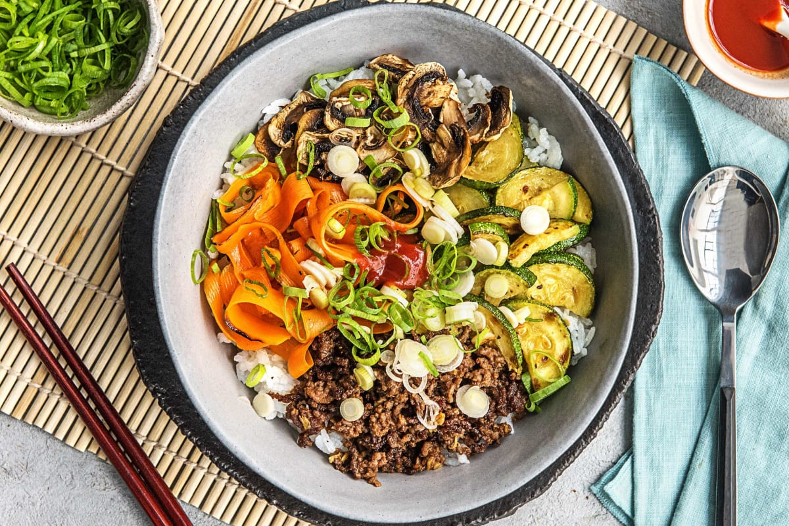

Korean Beef Bibimbap

Description
Korean Beef Bibimbap is a dish that is healthy and full of flavor. The dish is made up of mostly vegetables with rice and beef being a nice addition. The spices, sriracha, white wine vinegar and sesame seed oil combine to provide a beautiful coordinate pallet of both spicy, and sweet.
Ingredients
- 1 Zucchini
- 2-3 scallions
- 1 thumb ginger
- 3/4 cup Jasmine Rice
- 4 ounce Button Mushroom
- 6 ounce carrots
- 2 clove garlic
- 10 ounce ground beef
- 5 teaspoon White Wine Vinegar
- 2 teaspoon Sriracha
- 1 tablespoon Sesame Oil
- 3 tablespoon Soy Sauce
- 1.5 tablespoon sugar
- 4 teaspoon Vegetable Oil
- salt
- pepper
Steps
- Wash and dry all produce. Bring 1¼ cups water to a boil in a small pot. Halve zucchini lengthwise; slice into thin half-moons. Trim and thinly slice mushrooms and scallions, keeping scallion greens and whites separate. Peel carrot; using a peeler, shave lengthwise into ribbons. Peel and mince ginger. Mince garlic.
- Once water is boiling, add rice and a pinch of salt to pot. Cover, lower heat, and reduce to a gentle simmer. Cook until tender, 15-20 minutes.
- Toss scallion whites with vinegar and a pinch of salt in a small bowl. Set aside to marinate. In another small bowl, stir together sesame oil, 1½ TBSP sugar, up to half the sriracha, and 1½ TBSP soy sauce (we will use the rest of the sriracha and soy sauce later).
- Heat a drizzle of oil in a large pan over medium-high heat (use a nonstick pan if you have one). Add carrot; season with salt and pepper. Cook, tossing, until tender but still crisp, 3-4 minutes. Remove from pan and set aside. Add another drizzle of oil to pan and repeat with zucchini; remove from pan once cooked. Add mushrooms and another drizzle of oil to pan and cook until tender, 3-5 minutes. Season with salt and pepper. Remove from pan and set aside.
- Heat another drizzle of oil in same pan over medium-high heat. Add garlic and ginger and cook until fragrant, about 30 seconds. Add beef, breaking up meat into pieces. Cook, tossing occasionally, until no longer pink, about 4 minutes. Increase heat to high and continue cooking until browned and crisp, about 3 minutes. Pour in remaining soy sauce and cook, tossing, until mostly evaporated, 1-2 minutes. Season with salt and pepper.
- Divide rice between bowls. Arrange beef, zucchini, carrot, mushrooms, and scallion whites on top. Drizzle with sauce and remaining sriracha (to taste). Sprinkle with scallion greens and serve.